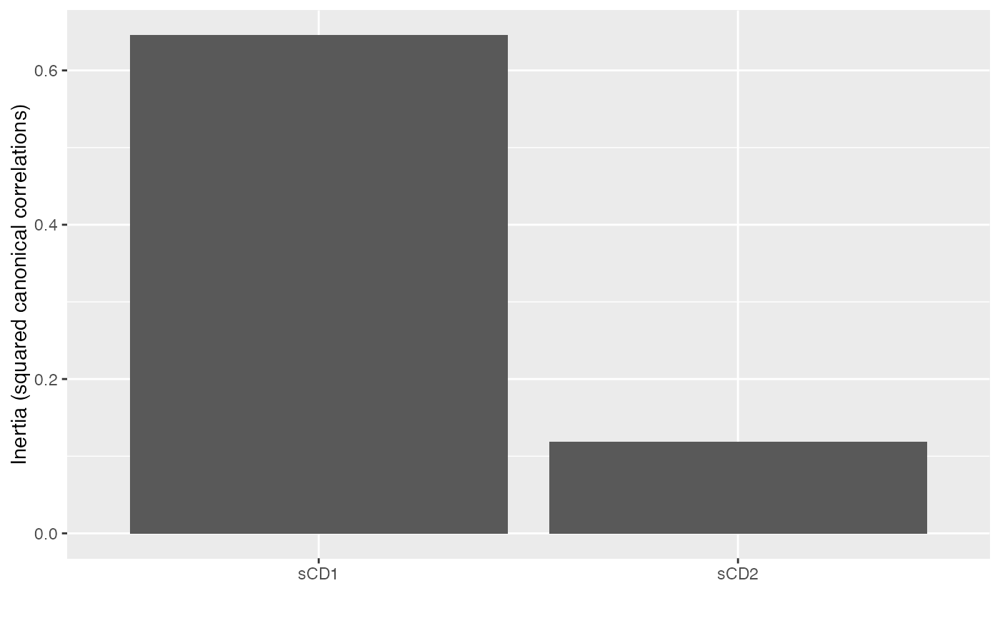
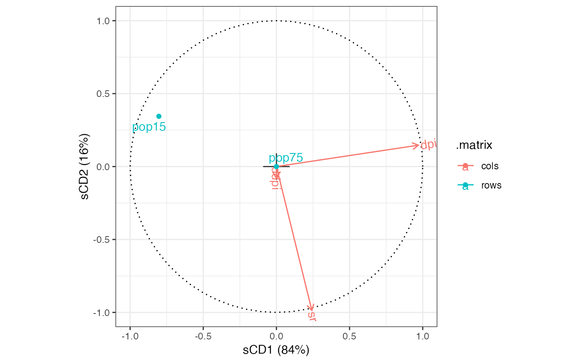

methods-pma.RdThese methods extract data from, and attribute new data to, objects of class 'SPC', 'CCA', and 'MultiCCA' from the PMA package.
# S3 method for CCA
as_tbl_ord(x)
# S3 method for CCA
recover_coord(x)
# S3 method for CCA
recover_rows(x)
# S3 method for CCA
recover_cols(x)
# S3 method for CCA
recover_inertia(x)
# S3 method for CCA
recover_conference(x)
# S3 method for CCA
augmentation_rows(x)
# S3 method for CCA
augmentation_cols(x)
# S3 method for CCA
augmentation_coord(x)An ordination object.
Witten, Tibshirani, and Hastie (2009) provide a theoretical basis and computational algorithm for penalized matrix decomposition that specializes to sparse PCA and to sparse CCA. Their R package PMA implements these specializations as well as one to sparse multiple CCA.
Note: These draft methods produce the biplot of Greenacre (1984), which are advised against by ter Braak (1990).
Witten DM, Tibshirani R, & Hastie T (2009) "A penalized matrix decomposition, with applications to sparse principal components and canonical correlation analysis". Biostatistics 10(3): 515--534. doi: 10.1093/biostatistics/kxp008
Greenacre MJ (1984) Theory and applications of correspondence analysis. London: Academic Press, ISBN 0-12-299050-1. http://www.carme-n.org/?sec=books5
ter Braak CJF (1990) "Interpreting canonical correlation analysis through biplots of structure correlations and weights". Psychometrika 55(3), 519--531. doi: 10.1007/BF02294765
# data frame of life-cycle savings across countries
class(LifeCycleSavings)
#> [1] "data.frame"
head(LifeCycleSavings)
#> sr pop15 pop75 dpi ddpi
#> Australia 11.43 29.35 2.87 2329.68 2.87
#> Austria 12.07 23.32 4.41 1507.99 3.93
#> Belgium 13.17 23.80 4.43 2108.47 3.82
#> Bolivia 5.75 41.89 1.67 189.13 0.22
#> Brazil 12.88 42.19 0.83 728.47 4.56
#> Canada 8.79 31.72 2.85 2982.88 2.43
# canonical correlation analysis of age distributions and financial factors
savings_cca <- PMA::CCA(
LifeCycleSavings[, c(2L, 3L)],
LifeCycleSavings[, c(1L, 4L, 5L)],
K = 2L, penaltyx = .7, penaltyz = .7,
xnames = names(LifeCycleSavings)[c(2L, 3L)],
znames = names(LifeCycleSavings)[c(1L, 4L, 5L)]
)
#> 12
#> 12
# wrap as a 'tbl_ord' object
(savings_cca <- as_tbl_ord(savings_cca))
#> # A tbl_ord of class 'CCA': (2 x 2) x (3 x 2)'
#> # 2 coordinates: sCD1 and sCD2
#> #
#> # Rows (standard): [ 2 x 2 | 0 ]
#> sCD1 sCD2 |
#> |
#> 1 -1 1 |
#> 2 0 0 |
#> #
#> # Columns (standard): [ 3 x 2 | 0 ]
#> sCD1 sCD2 |
#> |
#> 1 0.242 -0.986 |
#> 2 0.970 0.146 |
#> 3 0 -0.0801 |
# summarize ordination
glance(savings_cca)
#> # A tibble: 1 × 7
#> rank n.row n.col inertia prop.var.1 prop.var.2 class
#> <int> <int> <int> <dbl> <dbl> <dbl> <chr>
#> 1 2 2 3 0.764 0.845 0.155 CCA
# recover canonical variates
get_rows(savings_cca)
#> sCD1 sCD2
#> pop15 -1 1
#> pop75 0 0
get_cols(savings_cca)
#> sCD1 sCD2
#> sr 0.2422123 -0.98598522
#> dpi 0.9702233 0.14634075
#> ddpi 0.0000000 -0.08010956
# augment canonical variates with variable names
(savings_cca <- augment_ord(savings_cca))
#> # A tbl_ord of class 'CCA': (2 x 2) x (3 x 2)'
#> # 2 coordinates: sCD1 and sCD2
#> #
#> # Rows (standard): [ 2 x 2 | 1 ]
#> sCD1 sCD2 | .name
#> | <chr>
#> 1 -1 1 | 1 pop15
#> 2 0 0 | 2 pop75
#> #
#> # Columns (standard): [ 3 x 2 | 1 ]
#> sCD1 sCD2 | .name
#> | <chr>
#> 1 0.242 -0.986 | 1 sr
#> 2 0.970 0.146 | 2 dpi
#> 3 0 -0.0801 | 3 ddpi
# summarize canonical correlations
tidy(savings_cca)
#> # A tibble: 2 × 4
#> .name .cancor .inertia .prop_var
#> <fct> <dbl> <dbl> <dbl>
#> 1 sCD1 0.803 0.645 0.845
#> 2 sCD2 0.344 0.119 0.155
# scree plot of canonical correlations
tidy(savings_cca) %>%
ggplot(aes(x = .name, y = .inertia)) +
geom_col() +
labs(x = "", y = "Inertia (squared canonical correlations)")

# fortification binds tibbles of canonical variates
fortify(savings_cca)
#> # A tibble: 5 × 4
#> sCD1 sCD2 .name .matrix
#> <dbl> <dbl> <chr> <chr>
#> 1 -1 1 pop15 rows
#> 2 0 0 pop75 rows
#> 3 0.242 -0.986 sr cols
#> 4 0.970 0.146 dpi cols
#> 5 0 -0.0801 ddpi cols
# column-standard biplot of canonical variates
savings_cca %>%
confer_inertia("rows") %>%
ggbiplot(aes(label = .name, color = .matrix)) +
theme_bw() +
geom_origin() +
geom_unit_circle(linetype = "dotted") +
geom_cols_vector() +
geom_cols_text_radiate() +
geom_rows_point() +
geom_rows_text_repel() +
expand_limits(x = c(-1, 1), y = c(-1, 1))
